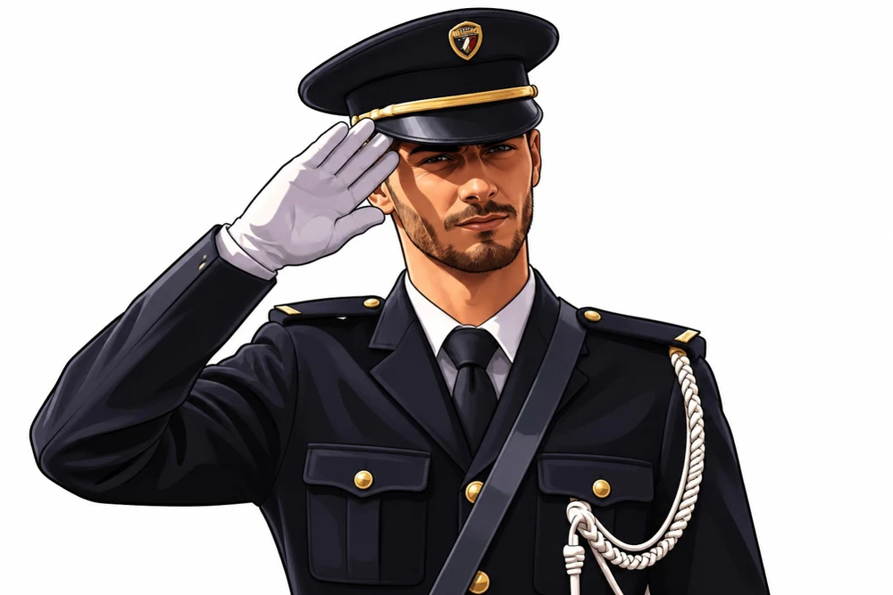

Composer la partie
À chacun son secret.
Passez le téléphone au joueur indiqué. Personne ne doit regarder.
Joueur
La discussion
Chacun donne un indice à son tour. Évitez d'être trop précis… ou trop vague.
Qui est suspect ?
Chaque joueur encore en jeu vote pour la personne qu'il souhaite éliminer. Le téléphone circule.
Joueur
Choisissez une cible.
Le verdict.
Égalité : un nouveau vote entre les joueurs concernés.
Joueur éliminé

Manche terminée
| Joueur | Rôle | Manche | Total |
|---|
Classement final
Bibliothèque
Chargement des données…
Paramètres
Comment jouer ?
Les civils
Ils reçoivent tous le même mot et doivent identifier les infiltrés.
Les undercover
Ils reçoivent un mot proche de celui des civils. Ils doivent se fondre dans le groupe.
Monsieur Blanc
Il ne reçoit aucun mot. Il improvise et tente de deviner le mot des civils s'il est démasqué.
Un tour de jeu
1. Chacun découvre secrètement son rôle. 2. Les joueurs discutent et donnent des indices. 3. Tous les joueurs actifs votent. 4. Le joueur ayant le plus de voix est éliminé. 5. La partie continue jusqu'à la victoire d'un camp.